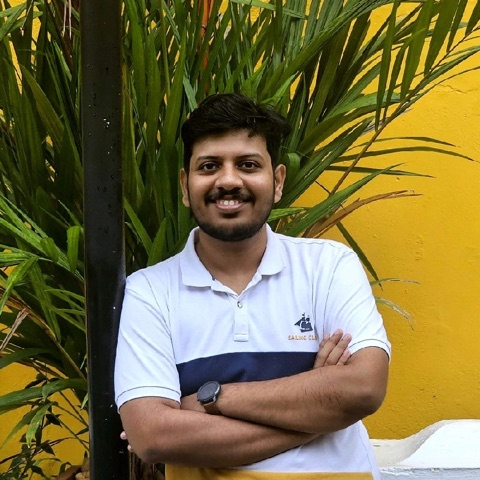

Technical architect at Rappit
I design and build software at Rappit: right now the architecture of an eCommerce platform, and before that a portfolio of around 20 ERP applications. This site is a hands-on tour of the ideas behind that work: events, data, delivery pipelines and how the pieces fit together.
Architecture, hands-on
Three small simulations of patterns that come up in almost every system. They run entirely in your browser, so click around and try to break them.
order.placedtopicorder.placed.dlqdead-letter queuePublish once, process independently
Checkout publishes an order.placed event and moves on. Each subscriber gets its own copy and works through its queue at its own pace, so a slow or broken consumer never holds up checkout.
Try it: click Email to make it fail. Its messages retry with exponential backoff, then move to the dead-letter queue while Inventory and Analytics carry on. Fix it, then redrive the queue.
- Published
- 0
- Processed
- 0
- Retries
- 0
- Waiting in queues
- 0
Every change takes the same road
A commit is built, tested and scanned automatically. Only then is it deployed to staging and rolled out to production in steps, with a health check between each step.
Try it: push a clean commit, then switch on a problem below and push again. A failing gate stops the pipeline; an error spike in production triggers an automatic rollback.
- In production
- v1.4.0
- Releases
- 0
- Stopped at a gate
- 0
- Rollbacks
- 0
empty
Pick a product to read it.
Cache-aside, with invalidation
Reads check the cache first. A miss falls through to the database, and the result is cached with a time-to-live. Writes go to the database and evict the cached copy, so readers do not keep seeing stale data.
Try it: read a product twice, then update it. Turn on live traffic and watch popular products become cache hits, then shorten the TTL and watch the hit ratio drop.
- Hit ratio, recent
- –
- Avg read latency
- –
Skills, explained
Pick a skill to see what it means in practice. Some of them have a lab above you can try.
Inside an eCommerce platform
The map at the top of the page is an illustrative view of how a system like this fits together: a storefront, an API gateway, services for catalog, cart, checkout and payments, and an event queue that tells the rest of the system an order was placed. Below is the path a feature takes from an idea to production.
At a glance
- My role
- Technical architect
- Team
- Ten full-stack engineers: leads and mediors
- Scope
- Requirements through production deployment
- Company
- Rappit
- Status
- In production
From requirement to production
Select a stage to see what it involves.
How the team is organised
The platform is built by ten full-stack engineers, leads and mediors, working in streams. Move your pointer over the chart to nudge it.
10people on the team
Every engineer works across the stack. Leads own the day-to-day delivery of a stream, and a shared architecture keeps the streams building the same way.
One application, or twenty
Before the eCommerce platform, we developed and maintained around 20 ERP applications for a large European chemical company. Switch views to see how the problems change with scale, and hover or tap an application.
1application in focus
Eight years at Rappit
Five roles at one company, from associate software engineer to solution architect.
-
Jun 2018 to Jan 2020
Associate Software Engineer
Started on ERP applications for a large European chemical company, working full-stack with Java and Angular.
-
Jan 2020 to Jan 2022
Software Engineer
Features across the ERP portfolio, from APIs and databases to Angular front ends.
-
Jan 2022 to Feb 2023
Team Lead
Leading a group of engineers on the ERP applications while still writing code.
-
Jan 2023 to Mar 2024
Technical Lead
Technical direction for several applications in the portfolio, with a focus on keeping them consistent.
-
Feb 2024 to present
Associate Solution Architect
Architecture for the ERP portfolio, and now for an eCommerce platform built by a team of ten, from requirements to production.
Principles I design by
-
Boundaries first
Draw services and modules around business capabilities, so a change in one place does not ripple through everything else.
-
Events at the seams
Between systems, publish facts such as "order placed" and let others react. Keep synchronous calls for when an answer is needed right now.
-
One owner per piece of data
Every entity has one system of record. Everything else is a copy with a known freshness, like a cache with a time-to-live.
-
Automate the road to production
Every change goes through the same pipeline: build, test, scan, deploy. Small, frequent releases are easier to reason about and to roll back.
-
Design for failure
Assume any call can fail. Timeouts, retries with backoff, idempotent consumers and dead-letter queues turn failures into something routine.
-
Start from the business outcome
Requirements come before diagrams. The simplest design that meets the goal is usually the one that lasts.
Want to talk architecture?
Always happy to swap notes on event-driven systems, data, delivery pipelines and eCommerce.